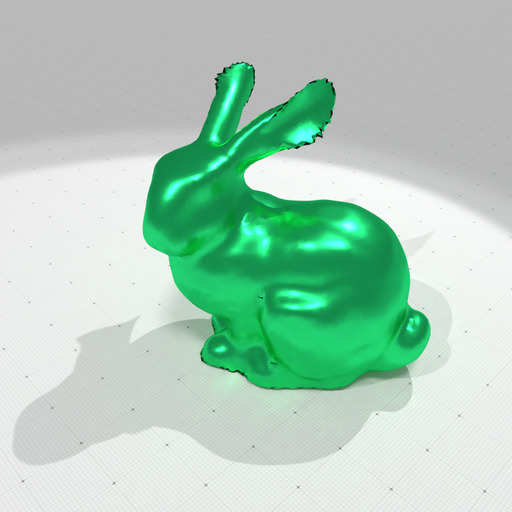
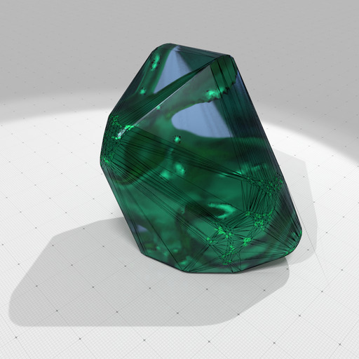

Computation of the convex hull of a list of 3D points by Quick Hull algorithm.
# Computes the convex hull of examples/samples/bunny.dat with precision 100
./examples/geometry/tools/exampleQuickHull3D
outputs
Read 13230 3D points.
Domain l=[PointVector] {-95, -135, -68} u=[PointVector] {6114, 4743, 6186}
[BoundedRationalPolytope<3> A.rows=2104 valid_edge_constraints=0 denom=100]
[ 100 0 0 ] . x <= 6114
[ -100 0 0 ] . x <= 95
[ 0 100 0 ] . x <= 4743
[ 0 -100 0 ] . x <= 135
[ 0 0 100 ] . x <= 6186
[ 0 0 -100 ] . x <= 68
[ -92731200 -234892700 -352348000 ] . x <= 264145202
[ -200106200 -500176600 -423177500 ] . x <= -1778463203
[ 1155400 -144600 -10046900 ] . x <= 43312434
...
[ 346800 558800 229200 ] . x <= 43326624
[ 1457700 2361700 949200 ] . x <= 181949097
[SurfaceMesh (OK) #V=1051 #VN=0 #E=3147 #F=2098 #FN=0 E[IF]=3 E[IV]=5.98858 E[IFE]=2]
[PolygonalSurface #V=1051 #E=3147 #F=2098 Chi=2]
[ConvexCellComplex<3> #C=1 #F=2098 #V=1051 ]

Coarse model of Stanford bunny |

Its convex hull with a precision 100 |
- See also
- QuickHull algorithm in arbitrary dimension for convex hull and Delaunay cell complex computation
#include "DGtal/base/Common.h"
#include "DGtal/geometry/volumes/ConvexityHelper.h"
#include "DGtal/shapes/SurfaceMesh.h"
#include "DGtal/io/writers/SurfaceMeshWriter.h"
#include "ConfigExamples.h"
double rand01() {
return (
double) rand() / (double) RAND_MAX; }
int main(
int argc,
char* argv[] )
{
int precision = argc > 1 ? atoi( argv[ 1 ] ) : 100;
std::string inputFilename = argc > 2
? std::string( argv[ 2 ] )
: examplesPath + "samples/bunny.dat" ;
std::vector< RealPoint > points;
std::ifstream finput( inputFilename.c_str() );
std::string linestr;
while ( std::getline( finput, linestr ) )
{
std::istringstream iss( linestr );
double a, b, c;
if ( ! (iss >> a >> b >> c) ) break;
}
trace.
info() <<
"Read " << points.size() <<
" 3D points." << std::endl;
const auto polytope
= Helper::computeRationalPolytope( points, precision );
bool ok = Helper::computeConvexHullBoundary( mesh, points, precision );
std::ofstream out( "qhull-mesh.obj" );
out.close();
bool ok2 = Helper::computeConvexHullBoundary( polysurf, points, precision );
bool ok3 = Helper::computeConvexHullCellComplex( cvx_complex, points, precision );
return ( ok && ok2 && ok3 ) ? 0 : 1;
}